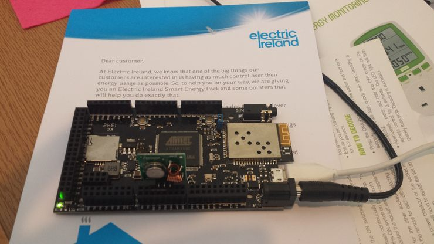
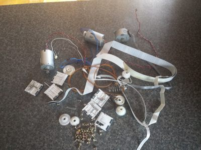

Hacking by Google Search
Building hardware with no electronics knowledge
Created by Conor O'Neill / @conoro
for 3D Camp Limerick, May 17th 2014
This Preso
Created using reveal.js - https://github.com/hakimel/reveal.js/
Visible at http://conoroneill.net/3dcamp2014/
Source Code at https://github.com/conoro/3dcamp2014/tree/gh-pages
Me
- ZX Spectrum Teen from 1982 - Loved it. Still have it. Still works
- Electronic Engineering in UCD 1986-1990 - Hated it
- Masters in Electronic Engineering in UCD 1990-1992 - DSP Software. Liked it
- Embedded Software Engineer - S3, Integral Design, Xilinx, Advanticus 1992-2003 - Telecoms and Digital TV - Good times
- Enterprise Software EMC 2003-2006 - Good money
- Internet Startup LouderVoice 2006-Present - Hardest thing I've ever done
- Enterprise Mobile Software FeedHenry, 2013-Present - The
futurepresent is mobile - Discovered the internet in 1990 before the WWW. Life changing. Really.
- Re-discovered Electronics in 2012. Has put the bounce back in my step. Even with bare-foot shoes.
What Changed?
This
And This

When you have a hammer
Why Arduino and not Pi
Halloween Doorbell
Cheese Controlled Car
Covered by Wired annddd the Kilkenny Reporter
Nunchuck Controlled Car
Wii Balance Board Controlled Car
Lego Car
Bandon Bluetooth Button
Web-Enabled Electric Blanket
Oven Temperature
Whats's the common thread here?
Google "How do I .... with Raspberry Pi"
Google "How do I .... with Arduino"
Google "Arduino Library for...."
Modules
Lots and Lots of Modules
Ohm's Law?
Tools you need
What can possibly go wrong?

Mondeo Button
£15 for 2nd hand part on eBay!
Sod that. This cost £1.50 and took 10 mins to fix. After delay of 7 years :-)
Actual Electronics from scratch
- Audio Amp
- Valentines Card
- Bookmark Light
Not always fun
Sometimes you can go around in circles for weeks
Audio Amp
Sometimes when it works
It's like magic, you've no idea why
Valentines Card
Other times when it works
OMFG, I rock
Bandon Bookmark Light
Giving Up
And there are times when giving up is the right thing

Shrimp - £1.47 Arduino
Paperduino - Paper based Electronics
Web Developer? - Try Espruino
JavaScript + Hardware
Links
Finally don't forget scavenging!
14 year old Epson Stylus Photo 870
